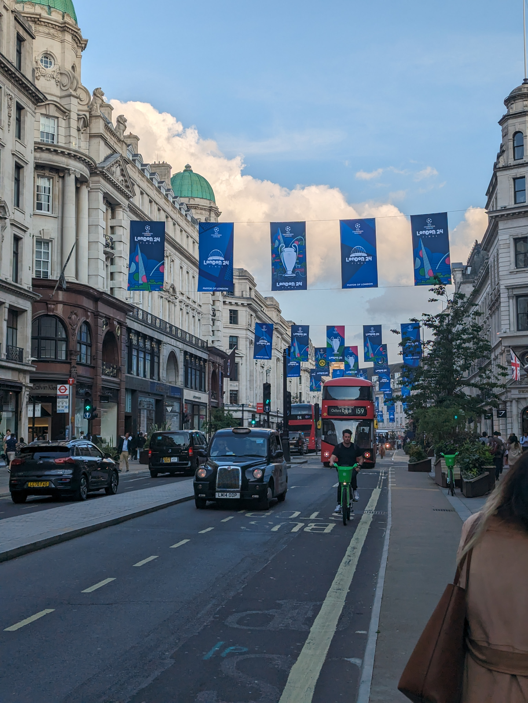

ご結婚おめでとう！
このページは、たくみくん&ほなみさんのご結婚をお祝い（？）するために作成したロンドンおすすめスポットマップです！ 新婚旅行の参考に、またご参加の皆さまの次の旅行の計画の参考にぜひどうぞ。
ピンを立てた基準について
実際に訪れてみておもしろい・興味深い・景色がいいなどの見どころがありそうなものを並べてみました。ガイドブックに載っていなさそうなところ、載っていてもやっぱり行くべきだというところを中心にしています！
ロンドンみどころマップ
ビッグベンやウェストミンスター寺院などの王道スポット以外のおすすめが知りたい！という方におすすめです。